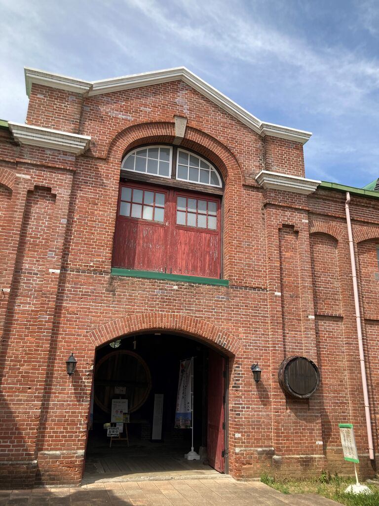
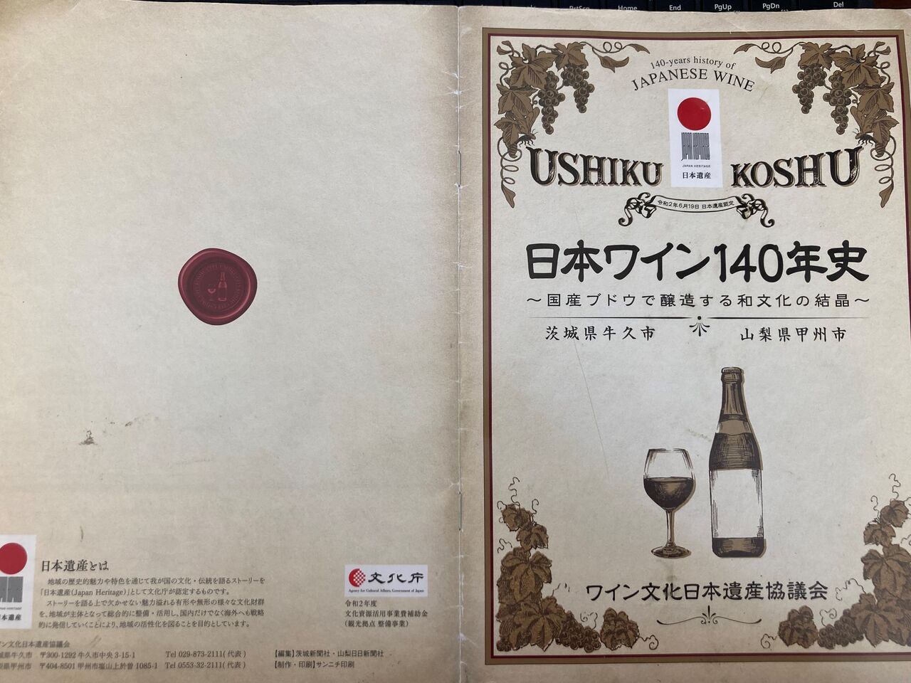
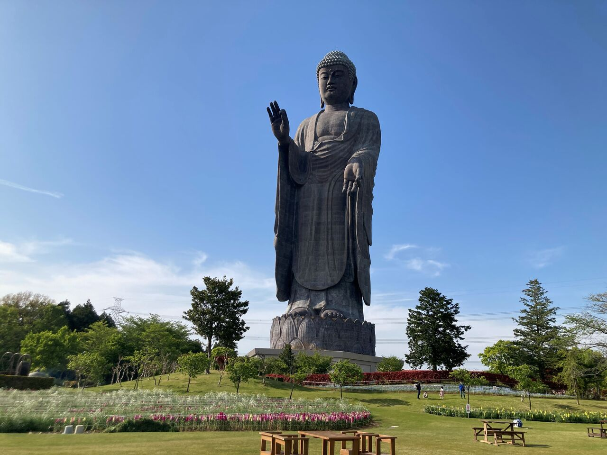
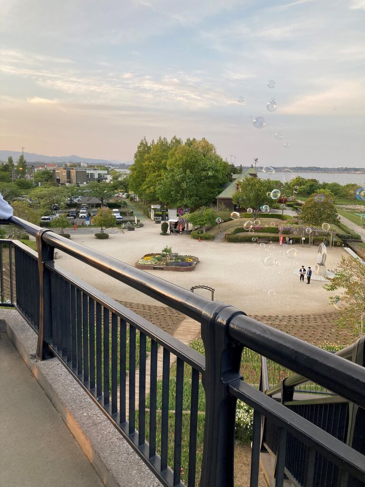

季節はすっかり秋ですが2021年4月24日（土）の牛久・阿見（霞ヶ浦）巡検の記憶を頑張って呼び起こして書いたので是非読んでいってください。
まず牛久シャトーに訪れました。
レンガの建物がおしゃれでした。レンガの積み方にもイギリス積みとかフランス積みや長手積み、小口積みなど色々とあるのですが、長いレンガと短いレンガ、行ごとに交互に積まれてるのはイギリス積みです。皆で建築様式を比較・分析するのも楽しそうですね。
あと、ワイン樽が沢山積まれているとことか展示施設も見ることができました。ちょうどこの時資源の授業でワインや発酵食品について学習したのでとても面白かった記憶があります。ちなみにフランス産ワインはボトルの形で大体産地（ボルドーとか）がわかるみたいです。あと、ワインだけでなく電気ブランというお酒についても色々説明されてました。
帰りがけにおいてあったパンフレットを持ち帰って読んでみたのですが、茨城県牛久市は山梨県甲州市とともに明治末期から大正にかけてワイン文化の発展に貢献した都市でありどちらも欠かせない存在だったようです。今はブドウというと山梨県の方がイメージが強いですが牛久シャトーは勝海舟や板垣退助などの偉人も訪れた歴史ある場所なのでぜひ行ってみてください。
次に牛久大仏に行きました。
この日は天気も良くいい感じに写真が撮られました。
大仏様にも登ったのですが、ちょうど周辺の花が見頃でカメラフォルダ見返すとほぼ花の写真でした。時間的にタイトでめちゃくちゃ焦って花の写真撮らせて！！！！って言ってた気がします。昔から花に興味があるのですが、有名な花や野菜の起源をマップに書き起こしたりしてワイワイするのも楽しそうです。これはぜひ生物・資源・その他植物好きの会員とやりたいなぁ…。
5月頭には咲いている一部の花を切り取って持ち帰るお花摘みもできるみたいなのですが、ちょっと時期が早くてまだできませんでした。
大仏だけでなく花畑や公園自体も広いのでピクニックとかも楽しめると思います。
その後、阿見プレミアムアウトレットに行きました。
写真がなかったんですけど、エヴァンゲリオンの大きめのモニュメント（？）があって驚きました。そして知り合いの会員たちが買い物やら物色やらほとんどせずにフードコートにいたことが印象的でした。でも、買い物してた人は結構してましたね、服とか..。
最後に土浦市の霞ヶ浦総合公園に行きました。自由に公園内を散策したり休憩したり好きなように過ごしました。私は先輩会員から鬼○をモチーフにしたであろう刀型シャボン玉をいただきました。
そして写真のように展望台からいっぱいシャボン玉飛ばしました。心が幼女なので個人的には1番楽しかったです。
こんな感じで8時頃にはつくばに戻ってきて解散でした。当サークルは、地理やそれに大きくかかわる分野が専門の人から旅行やぶらつくのがなんとなく好きかも～みたいな人もたくさんいるのでそんなに気負わず活動できるところが良いところだと思います。また緊急事態宣言明けたら会員と色々行きたいです。